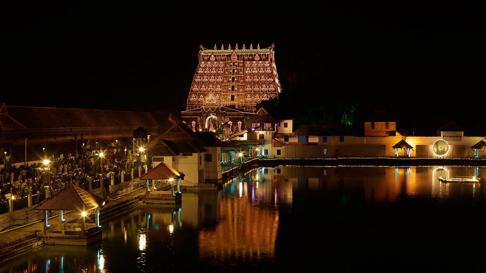
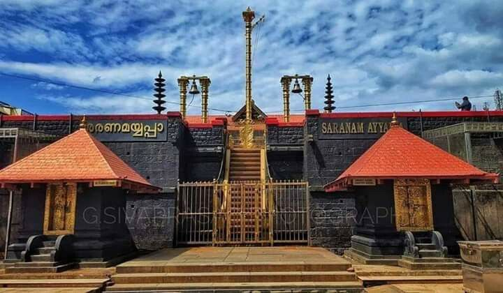
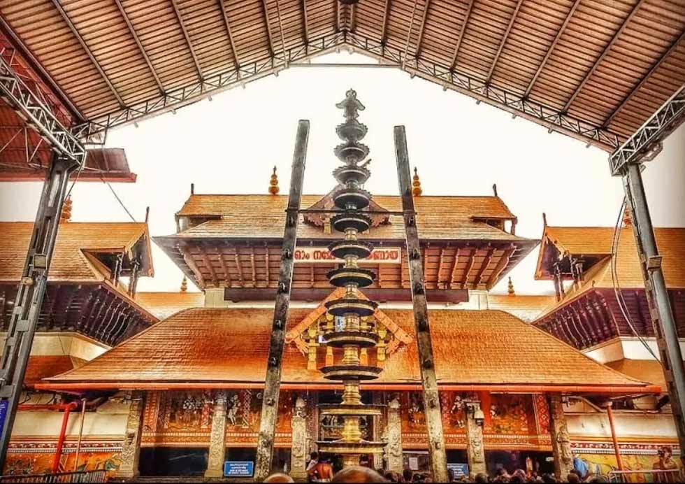
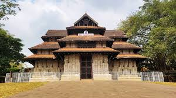
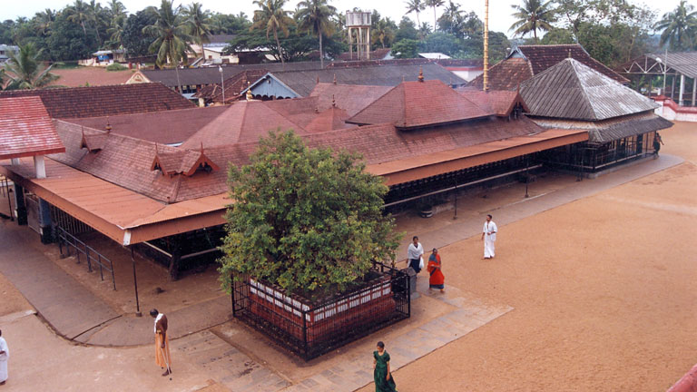
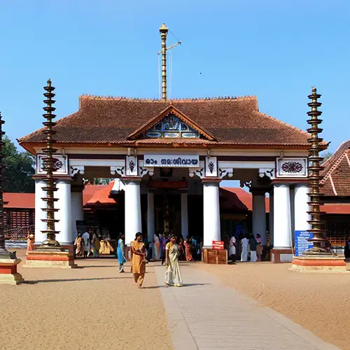
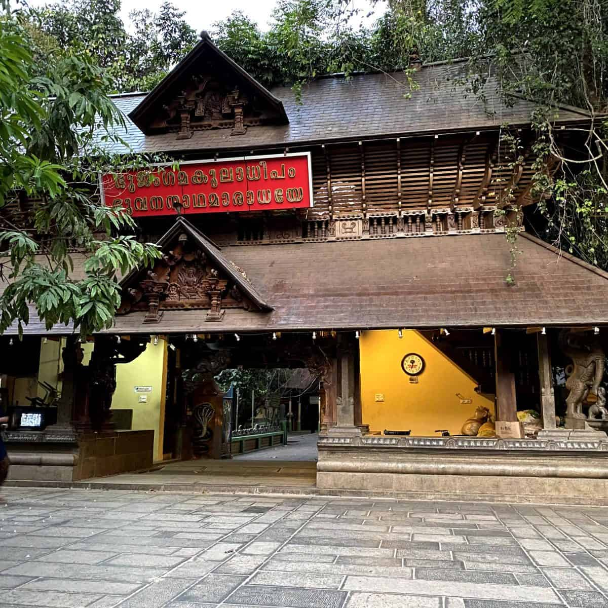
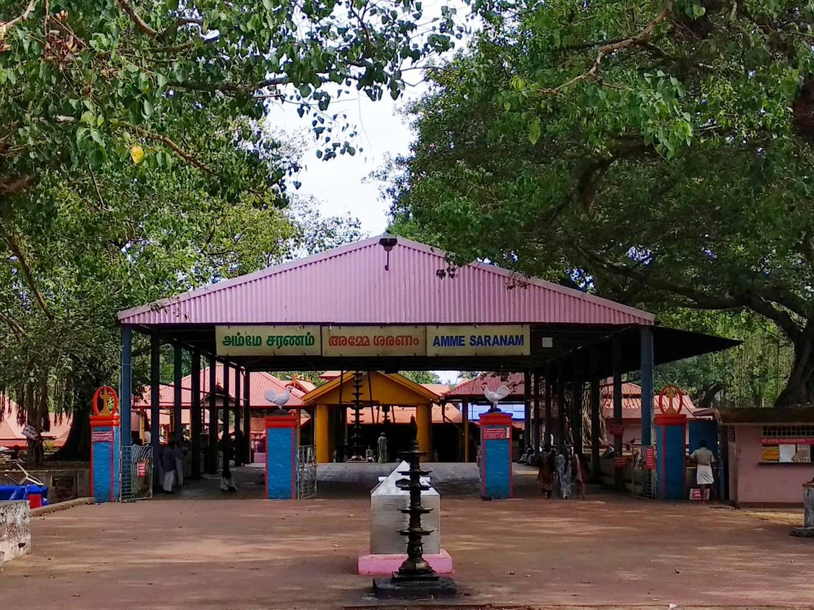
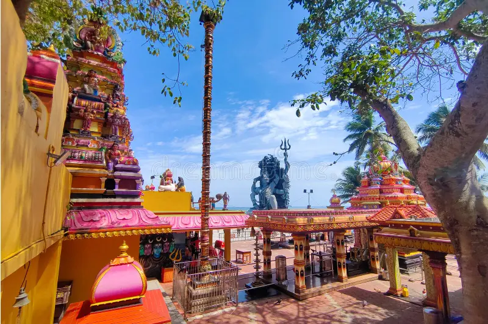

Shop 2
Sabarimala Sree Ayyappa Temple (Pathanamthitta)

Shop 3
Guruvayur Sri Krishna Temple (Thrissur)

Shop 4
Vadakkunnathan Temple (Thrissur)

Shop 5
Chottanikkara Temple (Ernakulam)

Shop 6
Vaikom Mahadeva Temple (Kottayam)

Shop 7
Mannarasala Nagaraja Temple (Alappuzha)

Shop 8
Kodungallur Bhagavathy Temple (Thrissur)

Shop 9
Thirunelli Temple (Wayanad)

Shop 10
Aazhimala Shiva Temple (Thiruvananthapuram)